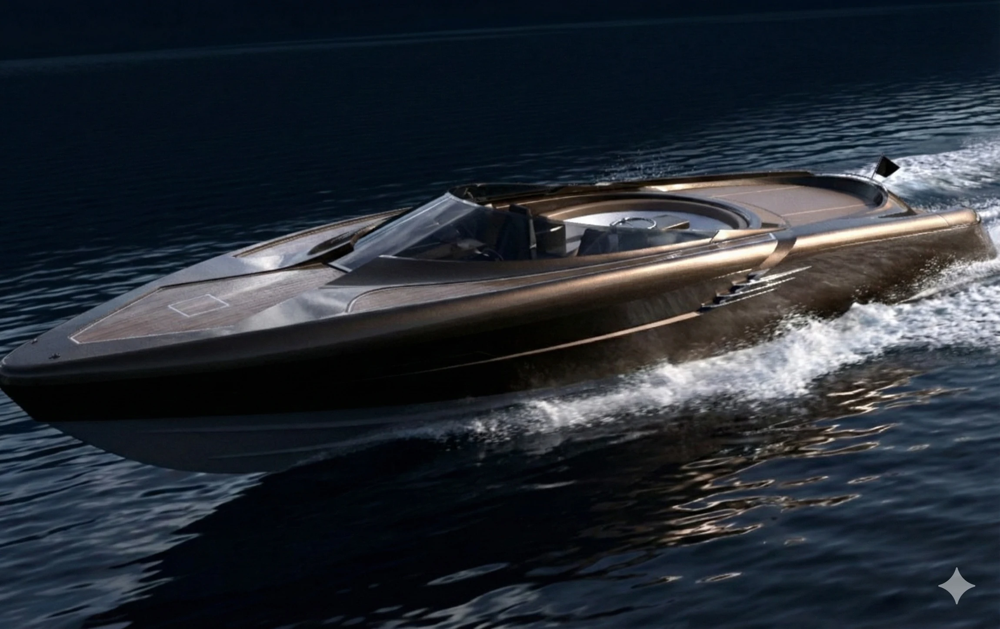
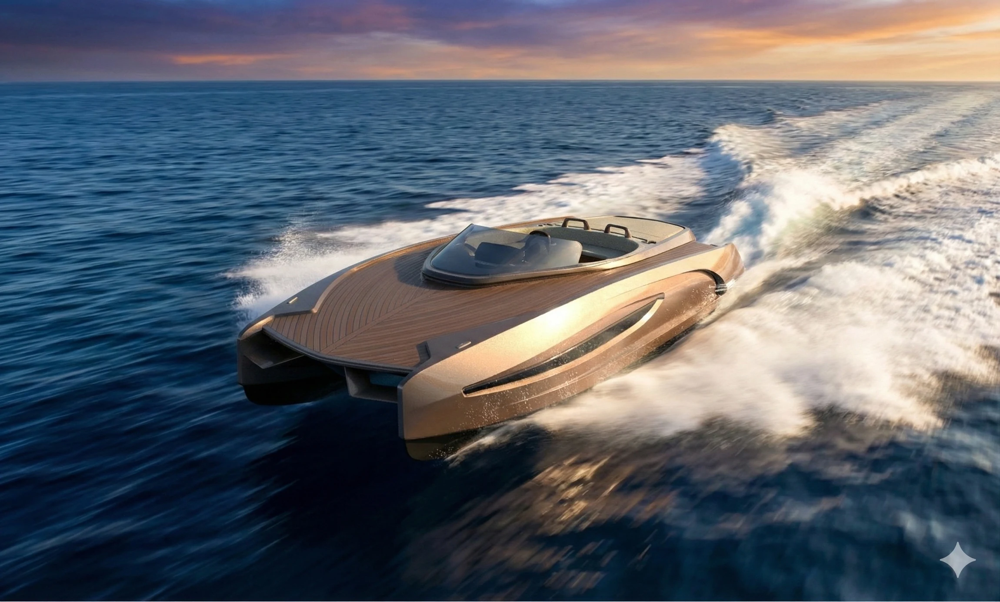
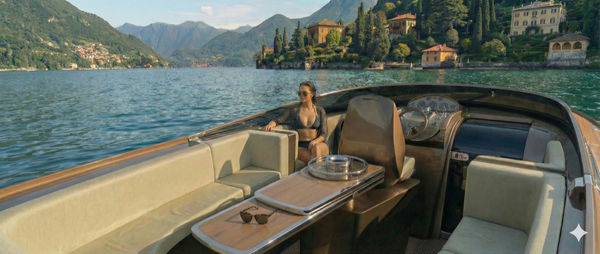
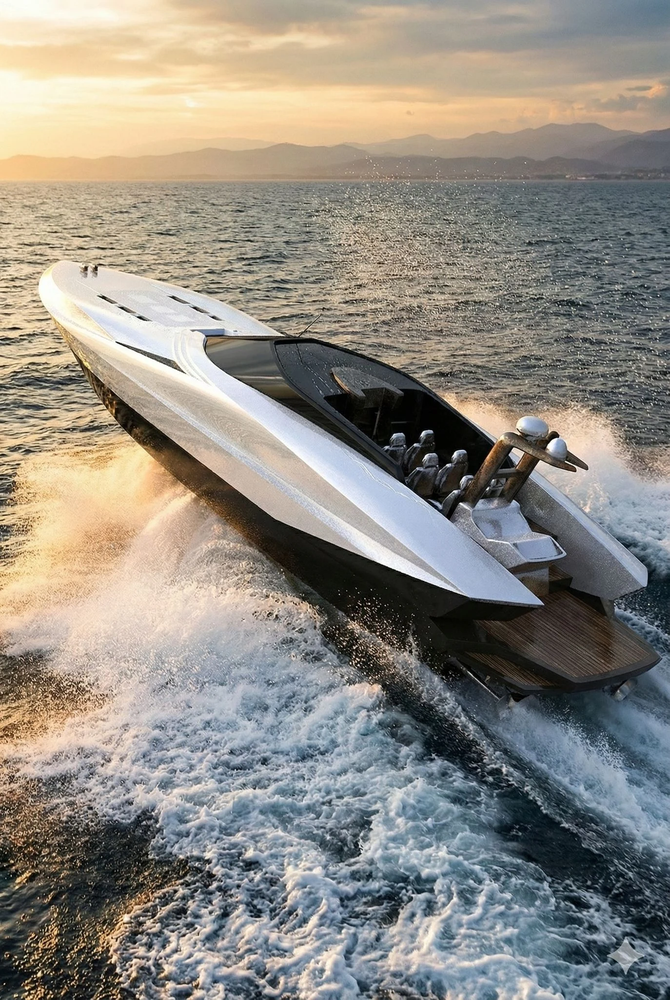
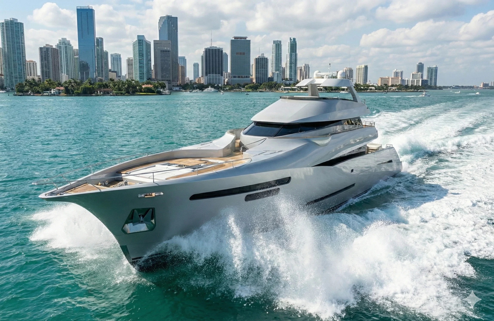

La Collezione / 02 · MAS 36
MAS 36
Lo Spirito del Gran Turismo.
The Italian Gran Turismo Spirit
MAS 36 brings together the elegance of a classic sporting motorboat and an unmistakably automotive influence. The original design archive explores the pleasure of a long weekend on the water through a distinctive exterior and an intelligently adaptable interior.
LA COLLEZIONE / MAS 36
Il Concept
The historic MAS 36 project was conceived as a modern interpretation of an established sporting boat language, drawing on the shapes and confidence of mid-twentieth-century automotive design. Rather than reproduce a period boat, the study seeks a balance between cultivated leisure and a more energetic character. Its original design provenance is retained in this presentation.
LA COLLEZIONE / MAS 36
Le Linee
The archival design proposed a folding bimini concealed within the backrest of the aft seating, integrating protection without disrupting the cockpit's clean appearance. A sunbathing area and the relationship between open space and shelter formed part of the original proposal. These are features described in the historic design documentation, not confirmed VELLARIO production equipment.
LA COLLEZIONE / MAS 36
La Vita a Bordo
The original MAS 36 arrangement proposed an adaptable space: a dinette capable of converting into a sleeping cabin, together with an independent bathroom. This flexibility gives substance to the long-weekend idea and distinguishes the design from a purely open dayboat. Any future VELLARIO interpretation will require renewed review of layouts, dimensions and construction feasibility.
LA COLLEZIONE / MAS 36
Dettagli & Materiali
The MAS 36 character depends on the meeting of two worlds: the measured proportions of classic Italian motoring and the clarity of contemporary nautical design. Colour and material choices should support this balance, without allowing heritage to become mere nostalgia. Specific finishes await the next technical and creative phase.
LA COLLEZIONE / MAS 36
Dati Tecnici
The historic MAS 36 press material documents a design proposal, not a current VELLARIO manufacturing specification. Dimensions and equipment require independent confirmation.
Galleria
Original MAS 36 renderings and presentation imagery. Photography takes priority where archival video quality would detract from the design.
UN INVITO PERSONALE
Contatti
A dedicated direct channel will be introduced when the future customer relationship is ready to operate.
CONTATTIDiscover the Collection.

LA COLLEZIONE 01 / 05Quantum 999Una Linea. Un Carattere.↗LA COLLEZIONE 02 / 05MAS 36Lo Spirito del Gran Turismo.↗
LA COLLEZIONE 03 / 05MAS 56Eleganza in Movimento.↗
LA COLLEZIONE 04 / 05GranTender 72Presenza. Movimento. Libertà.↗
LA COLLEZIONE 05 / 05Gran MarlinL'Anima del Mare Aperto.↗